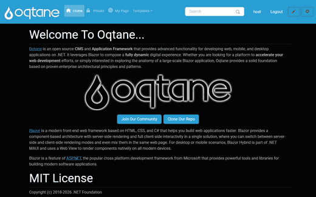
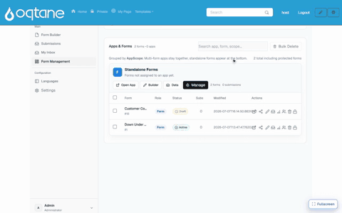
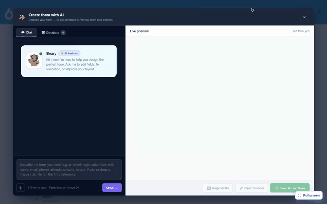
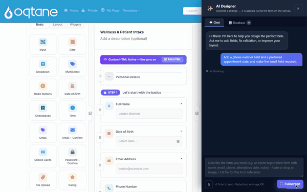

Creating Forms — Visual Walkthrough
MegaForm gives you four ways to build a form, from a guided wizard to a plain-English AI assistant. This page walks through each one end to end, with a short recording of the real builder for every flow. In each case the result is a live, working form on your Oqtane page.
All four flows are reached from the module's Form Dashboard (the ⚙ / Form Dashboard
button on a MegaForm module, or ?mfpanel=dashboard).
| Flow | Best for | Jump to |
|---|---|---|
| Wizard | A quick standard form, step by step | Wizard |
| Multi-step | Splitting a long form across pages | Multi-step form |
| Create with AI | Describing a form in plain English | Create with AI |
| AI Designer | Changing an existing form by chat | Modify with AI |
Wizard — a simple form
Click New Form to open the five-step Form Wizard (Setup → Fields → Workflow → Design → Publish). Name the form, add fields from the field-type gallery — the live preview builds up as you go — then publish. The form is immediately available on its Oqtane page, ready to fill in.

Steps shown
- New Form → the wizard opens on the Setup step.
- Enter a Form Name (e.g. Customer Contact Form).
- On Fields, click field types to add them — Full Name, Email, Long Text — and watch the live preview populate.
- Step through Workflow → Design → Publish and click Create Form.
- The published form renders on the Oqtane page and accepts input.
The wizard produces a standard form. You can keep editing it later in the Form Builder.
Multi-step form
A long form reads better split across pages. In the wizard's Fields step, turn on the Multi-step form toggle and use + Add Step to create pages, then assign fields to each step. The published form shows a progress bar and Previous / Next navigation.

Steps shown
- Name the form (Event Registration) and open the Fields step.
- Add the first page's fields (Full Name, Email, Phone).
- Flip the Multi-step form toggle, then + Add Step to create Step 2.
- Add the second page's fields (Date, Dropdown, Long Text).
- On the live Oqtane page, fill in Step 1, click Next, and Step 2 appears with its own fields — the stepper marks Step 1 complete.
Multi-step also works from the builder using Page Break layout blocks — see Form Builder.
Create a form with AI
Don't want to place fields by hand? Click ✨ Create with AI, describe the form in one sentence, and the assistant generates a complete, structured form in the live preview — correct field types, labels, and validation included. Review it, then Save & Use Now.

Steps shown
- ✨ Create with AI opens the assistant with a chat panel and a live preview.
- Type a description, e.g. "a job application form with name, email, phone, position, years of experience, expected salary, start date and cover letter."
- Click Send — the AI (OpenAI GPT-4o in this recording) returns a full form: composite name, email, phone with country code, dropdowns, dates, and a message field.
- Keep it with Save & Use Now, or open it in the builder to fine-tune.
The AI is a licensed feature and is configured under ⚙ Settings → AI (provider + model + API key). It is disabled on trial installs. See AI Form Designer.
Modify a form with AI
The same assistant lives inside the builder as the AI Designer. Open any form, ask for a change in plain English, and the AI applies it live to the form on the canvas.

Steps shown
- Open a form in the builder and click AI Designer.
- Ask for a change, e.g. "Add a phone number field and a preferred appointment date, and make the email field required."
- The AI applies the edit to the canvas and confirms what it changed.
Under the hood the AI emits reviewable structured operations (
add_field,set_required, …) rather than free-form code. See AI Form Designer for the tool-use model and AI Prompts for Form Design for prompt patterns.
Next steps
- Form Builder — the full visual designer (fields, validation, logic, styling).
- AI Form Designer — how the AI assistant plans and applies changes.
- Template JSON Reference — the schema behind every form.
- Workflow — approvals and automation once submissions arrive.